Di Balik Benda v4 · 90 seconds · 16 shots · pre-audio static layout verification under delegated automation
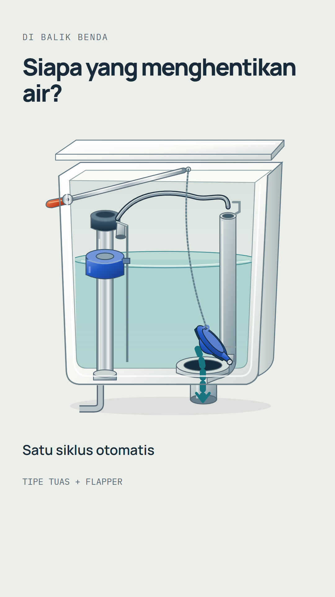
01: Siapa yang menghentikan air?
0.00–6.00s · estimate
Satu siklus otomatis
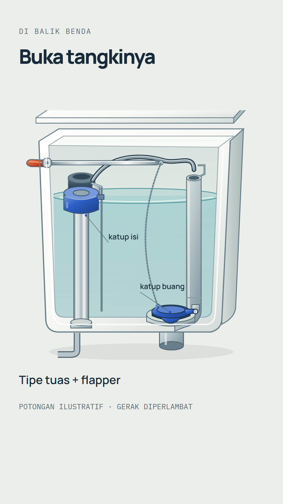
02: Buka tangkinya
6.00–11.00s · estimate
Tipe tuas + flapper
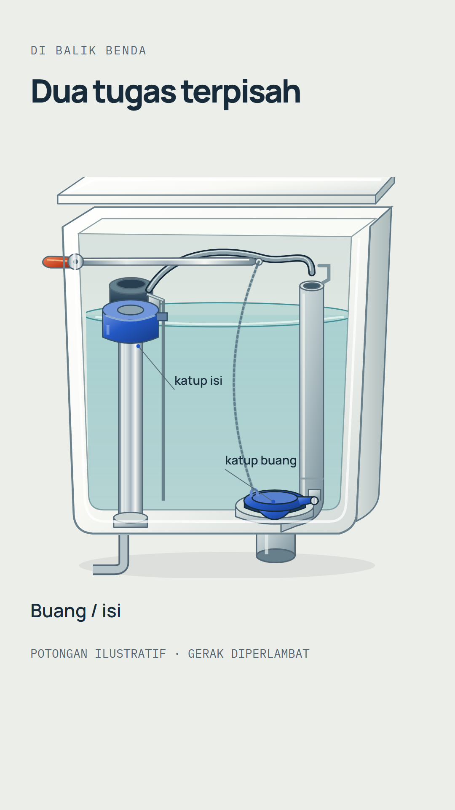
03: Dua tugas terpisah
11.00–16.00s · estimate
Buang / isi
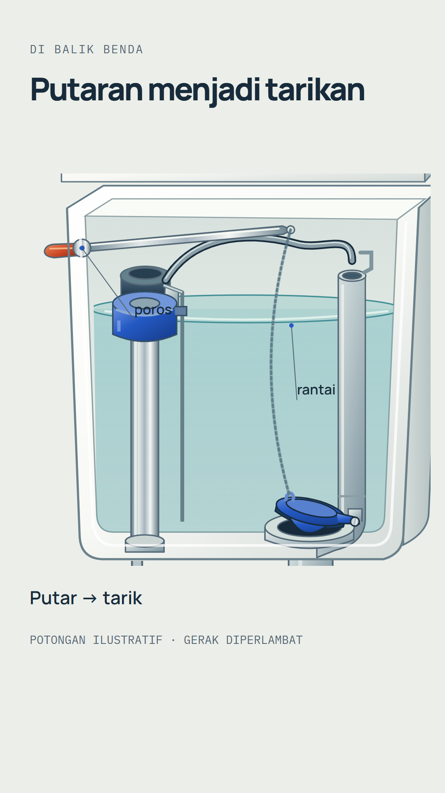
04: Putaran menjadi tarikan
16.00–21.00s · estimate
Putar → tarik
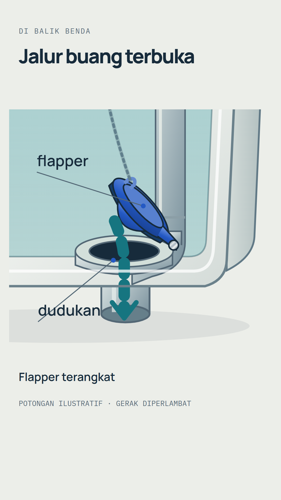
05: Jalur buang terbuka
21.00–27.00s · estimate
Flapper terangkat
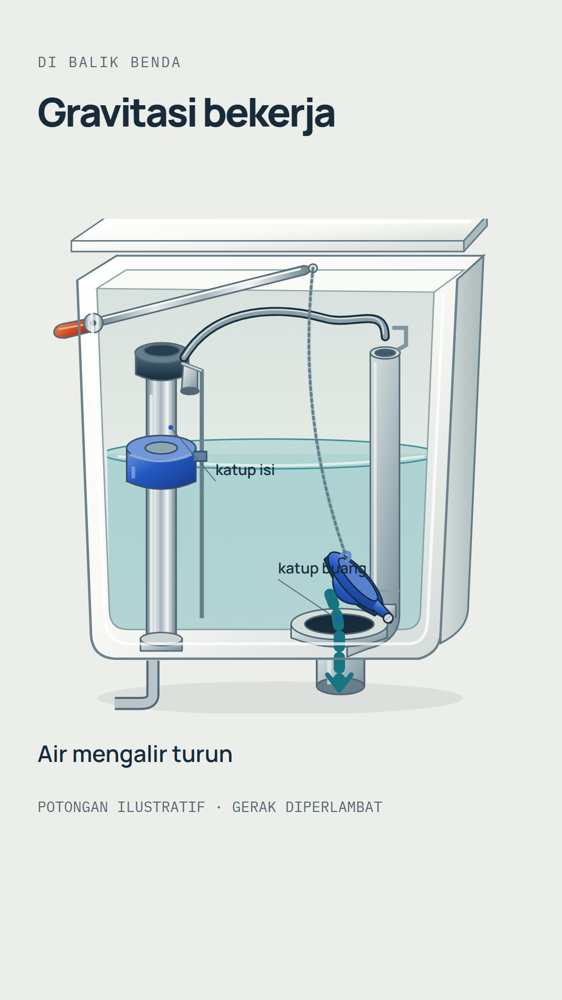
06: Gravitasi bekerja
27.00–32.00s · estimate
Air mengalir turun
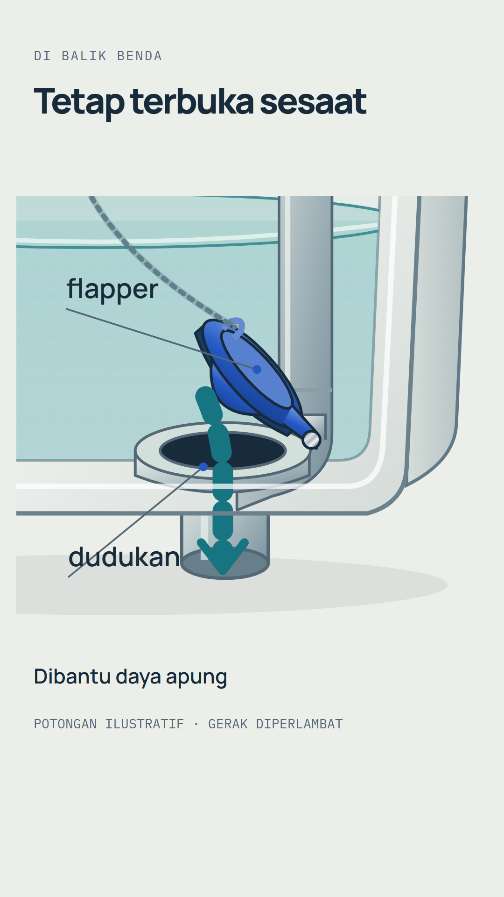
07: Tetap terbuka sesaat
32.00–38.00s · estimate
Dibantu daya apung
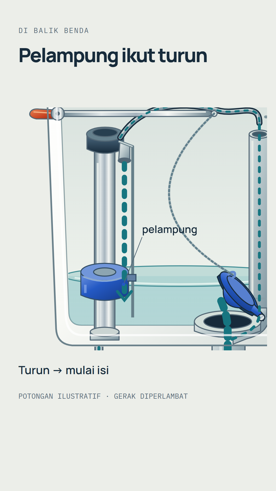
08: Pelampung ikut turun
38.00–44.00s · estimate
Turun → mulai isi
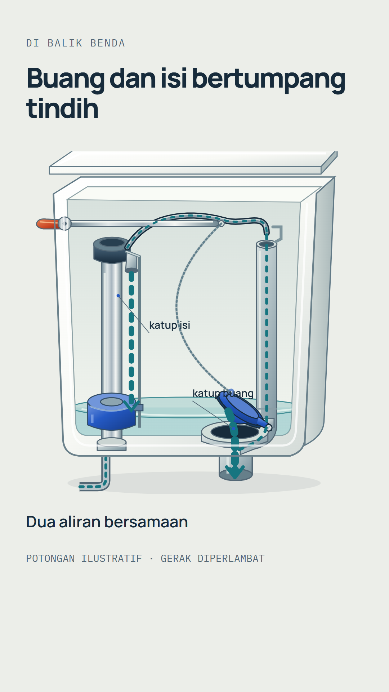
09: Buang dan isi bertumpang tindih
44.00–49.00s · estimate
Dua aliran bersamaan
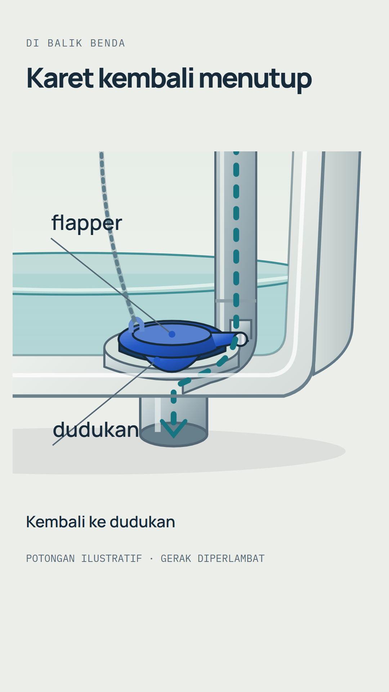
10: Karet kembali menutup
49.00–55.00s · estimate
Kembali ke dudukan
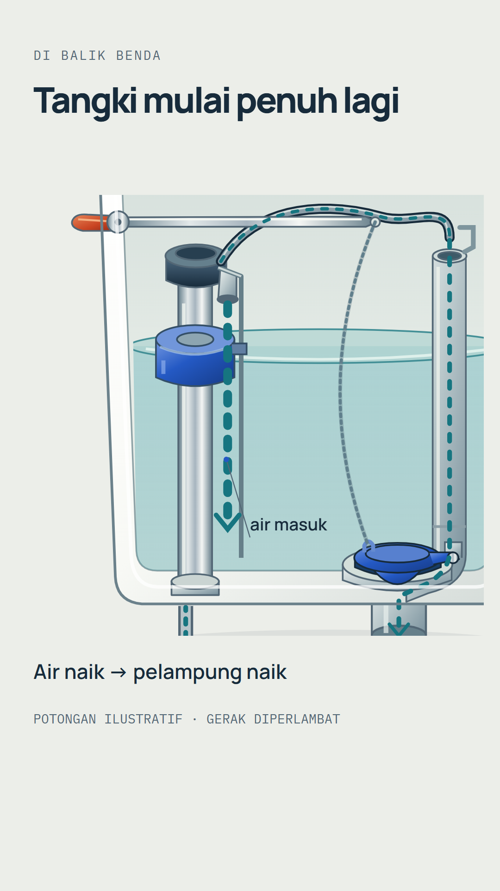
11: Tangki mulai penuh lagi
55.00–60.00s · estimate
Air naik → pelampung naik
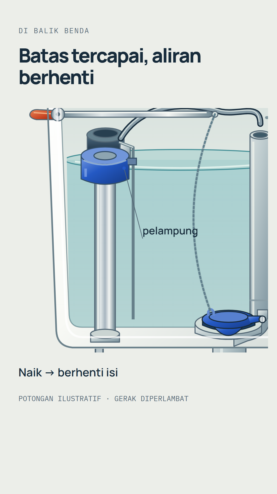
12: Batas tercapai, aliran berhenti
60.00–66.00s · estimate
Naik → berhenti isi
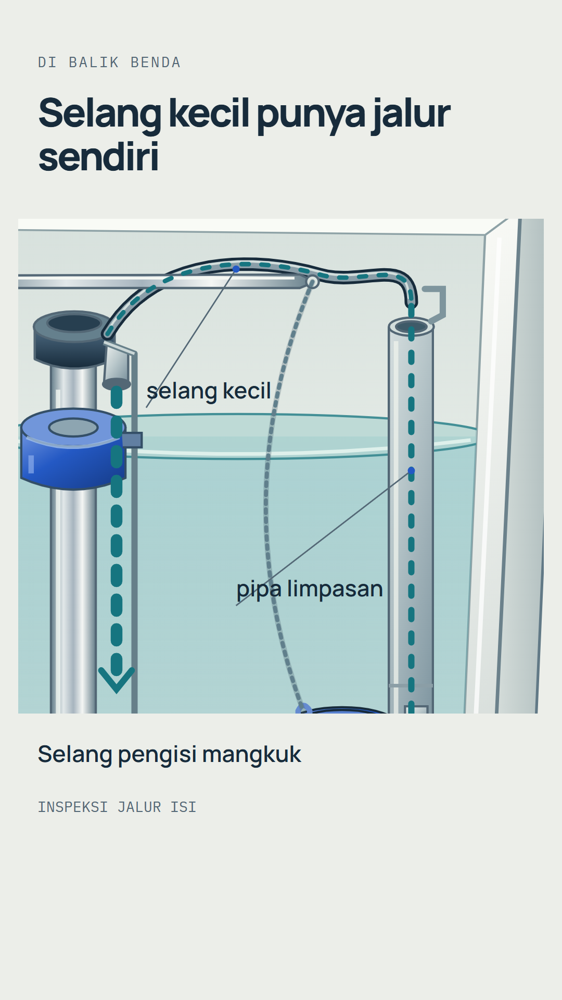
13: Selang kecil punya jalur sendiri
66.00–72.00s · estimate
Selang pengisi mangkuk
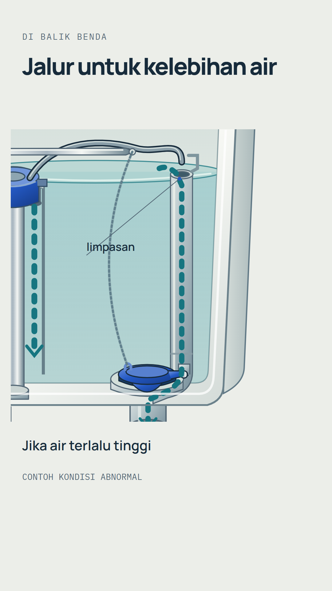
14: Jalur untuk kelebihan air
72.00–77.00s · estimate
Jika air terlalu tinggi
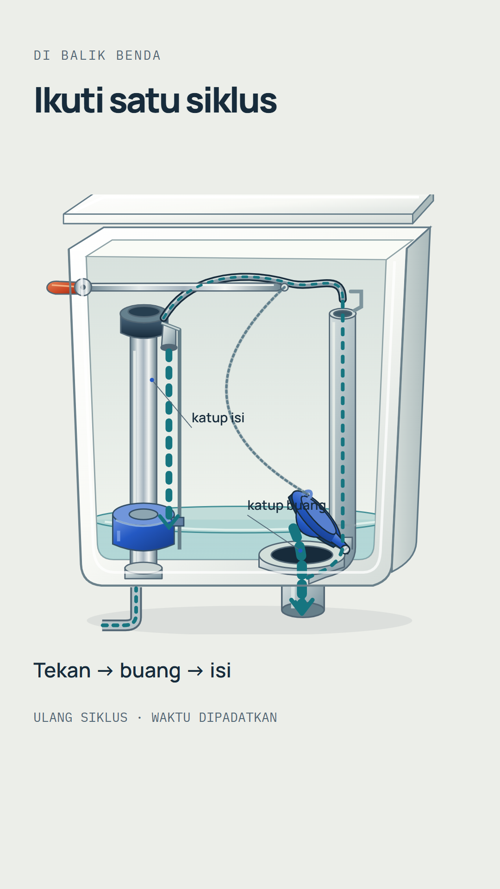
15: Ikuti satu siklus
77.00–84.00s · estimate
Tekan → buang → isi
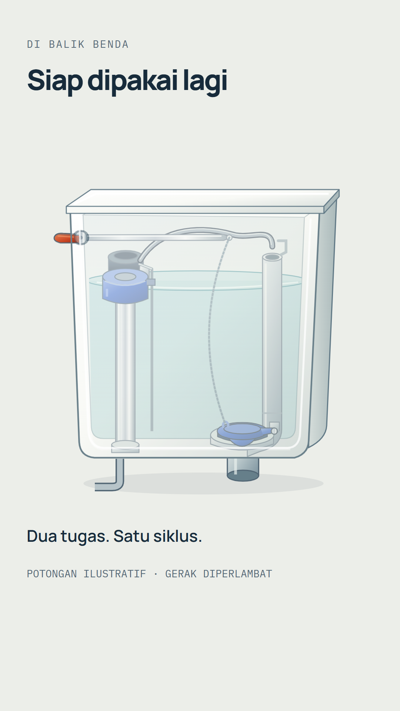
16: Siap dipakai lagi
84.00–90.00s · estimate
Dua tugas. Satu siklus.